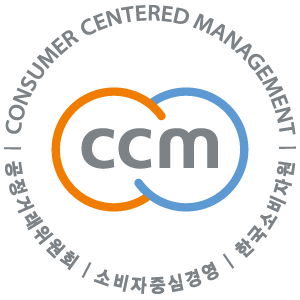

home > 고객지원 > CCM
CCM
동아제약은 언제나 고객님의 편의를 먼저 생각합니다.
CCM(소비자중심경영)이란?

소비자중심경영, 즉 CCM은 기업이 수행하는 모든 활동을 소비자 관점에서, 소비자 중심으로 구성하고, 관련 경영활동을 지속적으로 개선하고 있는지를 평가하여 인증하는 제도입니다.
※ 근거 소비자기본법 제 20조의 2-4
목적 및 기대효과
- 목적
- CCM 인증제도는 기업 및 기관의 소비자 지향적 경영문화 확산과 소비자 권익 증진 노력을 통한 경쟁력 강화 및 소비자 후생증대에 기여함을 목적으로 합니다.
- 소비자 권리 확보
- 소비자 측면에서는 상품 및 서비스 선택기준이 되는 정보를 제공받고, 기업과 소비자간 문제 발생 시, 소비자중심경영(CCM) 운영 체계에 따라 신속하고 합리적인 해결이 가능하다.
- 기업 가치 증진
- 기업 측면에서는 최고경영자(CEO)와 임직원의 소비자 권익에 대한 인식을 제고하고, 상품과 서비스 수준을 소비자 관점으로 끊임없이 개선함으로써 대내외 경쟁력을 강화할 수 있다.
- 사회적 비용 절감
- 공공 측면에서는 사후 분쟁해결 및 행정조치로 인한 사회적 비용을 절감하고, 소비자중심의 선순환 시장을 조성함으로써 기업-소비자 상생문화 확산에 기여한다.